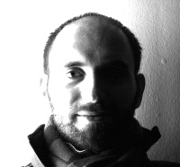
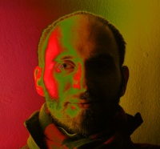
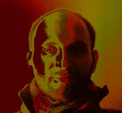
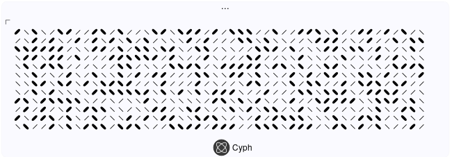

ANDREA G. FORTE
===================



Bio
----
Andrea G. Forte is a Senior Research Scientist at the AT&T Security Research Center. His expertise covers several fields of research such as mobility in wireless networks, software defined networking, IP Multimedia Subsystem, next-generation networks and Internet of things.
Prior to AT&T, Andrea worked for eight years as a Research Associate in the Department of Computer Science at Columbia University in Prof. Henning Schulzrinne's Internet Real-time Laboratory where he researched wireless networks, real-time media, fast handoffs and signaling compression for low bandwidth channels.
Andrea serves on a number of conference and journal steering committees, he is active in various standards bodies and holds numerous publications and patents. He received both a Bachelor's degree and a Master's degree in Telecommunication Engineering from the University of Rome "La Sapienza" (in italian), in Italy. Work based on his dissertation on Fast Handoffs in IEEE 802.11 Networks received the 2005 Frost & Sullivan Excellence in Research Award.
Encrypted Riddle [Cyph Mobile (iOS)]
----------------

My "Serious" Websites
---------------------
Cyph
Columbia University (old)
Email
------
Other Contacts
---------------
--
Copyright © 2020, Andrea G. Forte. All rights reserved.